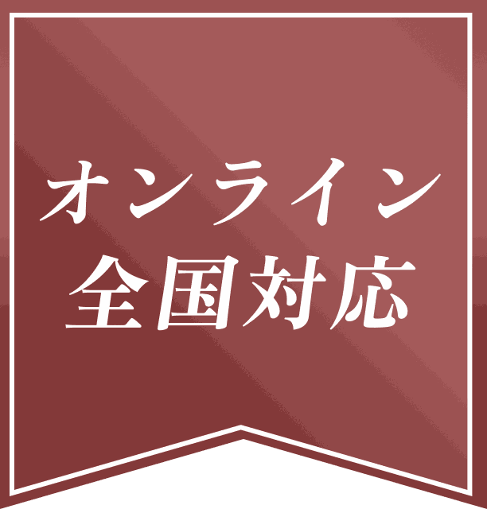
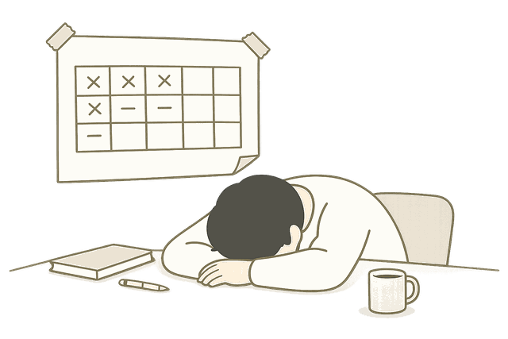
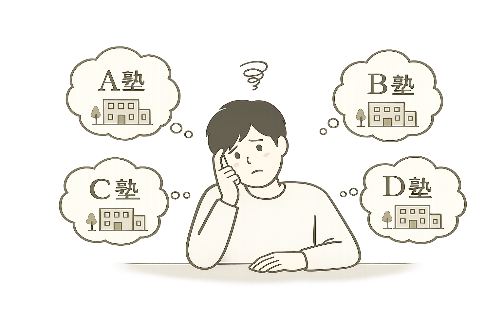
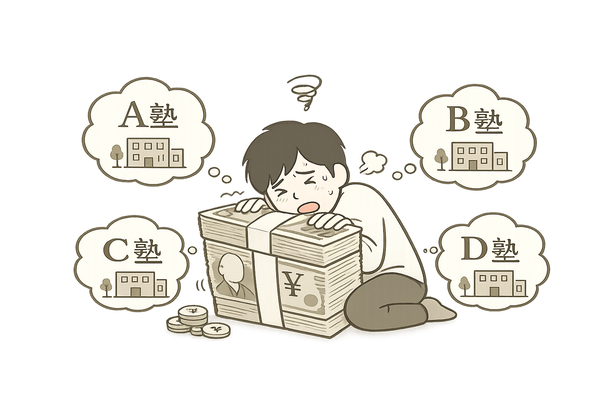
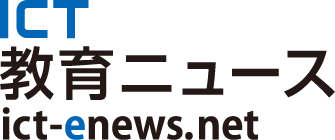
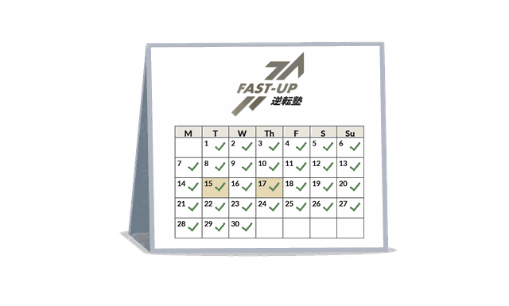
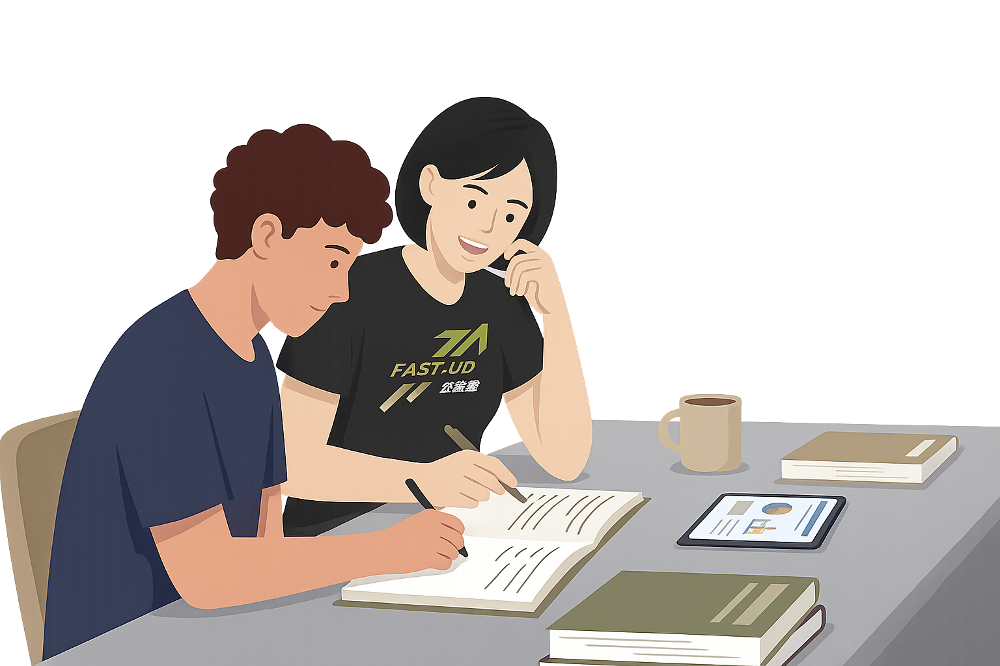

植村さん
#現役生
偏差値45»65(20UP)
青山学院大学に合格
偏差値45から青学へ。カリキュラムを改善して最短で合格できた。


「自分で続ける」を、卒業。
計画も、教材も、進捗も、復習も。
全て、プロが管理。
※1 〜2025年11月末時点の累計指導者数
※2 毎日特訓に90%以上参加した方の合格数
※3 平均在塾期間 11か月での実績（偏差値+21）
計画を立てても、
実行できない…

分かっていても、
スマホをいじってしまう…
「自分は意志が弱い」と
思っている…
どの塾が良いのか
分からない…

お金を
無駄にしたくない

何から始めて良いか
分からない…
一般塾の7倍
計画も進捗も、コーチが横で管理。
一般塾の約半額
教材・模試・夏冬講習まで全部込み。
合わなければ返金
14日間は無条件返金もOK。
私立×逆転合格を日本で初めて実践
YouTube 2.3万 / TikTok 2.7万
朝日新聞 / NewsPicks / ABEMA News / PR TIMES

偏差値45»65(20UP)
青山学院大学に合格
偏差値45から青学へ。カリキュラムを改善して最短で合格できた。
偏差値32»65(33UP)
青山学院大学に合格
偏差値32から青学へ。工業高校からでも逆転合格できる。
偏差値50»65(15UP)
早稲田大学に合格
偏差値50から早稲田大学へ逆転合格。
偏差値50»65(15UP)
慶應義塾大学に合格
偏差値50から慶應義塾大学へ。正しい学習法を極めて逆転合格。
偏差値50»70(20UP)
上智大学に合格
偏差値50から上智大学に逆転合格。コーチからのポジティブな言葉がきっかけで偏差値20UP。
偏差値38»62(24UP)
中央大学に合格
偏差値38から中央大学に逆転合格。細かいゴールがあったから毎日頑張れた。
偏差値52»64(12UP)
立教大学に合格
偏差値52、万年E判定から立教大学合格！基礎を固めて逆転合格。
偏差値37»73(36UP)
明治大学に合格
偏差値37から明治・青学などに多数合格。自ら考える学習で一気に伸ばせた。
※キャンペーン中につき「無料」。定員になり次第終了いたします。
「勉強しなくちゃ、と思うのに、結局できない」
それは、意志が弱いせいじゃない。
続くかどうかは、意志ではなく環境で決まる。
※ 行動科学・習慣形成における基本原則
では、その「環境」とは？
固定の専属コーチ
毎回違う先生はNG。
土日含めて毎日
週1・週2はNG。

隣で3時間
遠くから見守るはNG。

逆に、3つ揃えば、誰でも続く。
勉強が3日続かなかったあなたも、例外なし。
決められない
何やればいいか、自分では。
置けない
自分で自分を、毎日横に。
測れない
自分の理解度は、自分では。
| 選択肢 | 同じ人 | 毎日 | 横にいる |
|---|---|---|---|
| 自学（参考書） | ✕ | ✕ | ✕ |
| 集団塾・予備校 | △ | ✕ | ✕ |
| 個別指導塾 | △ | ✕ | ✕ |
| 一般のコーチング塾 | ○ | ✕ | ✕ |
| FAST-UP | ○ | ○ | ○ |
3つ全部揃っているのは、
FAST-UPのみ。
週1の塾と、毎日の塾。
伸びる量の違い、一目瞭然。
会話だけの面談ではない。
手を動かす指導、毎日3時間。
演習 → 講義 → ミニ模試、毎日。
知識を強制定着。
コーチからの逆質問。
説明できなければ、即その場で再解説。
1日の終わりに 20分テスト。
基準点突破まで、終わらない。
「何やればいいか分からない」を、ゼロに。
朝起きたら、今日の分が届いてる。あなたは、こなすだけ。
アプリに「今日やること」を提示。迷う時間ゼロ。
動画・音声付き。誰でも理解できる設計。
マークシート＋同問題数＋制限時間で本番再現。立ち位置を一目で可視化。
早慶・GMARCH 各学部別の過去問演習集＋出題パターン分析。
教材費・模試・夏冬期講習──。「月額」だけでは、本当のコストは見えません。
1年間の総額で並べると、差は歴然です。
約137万円／年
約60万円／年
年間 約77万円 安い。
なのに、指導時間は 7倍。
見てくれる時間で割れば、1時間あたり 593円。
| 項目 | 一般的な学習管理塾 | FAST-UP |
|---|---|---|
| 指導時間 | 週1〜3時間 | 週21時間（7倍） |
| カリキュラム | 大まかな計画のみ | 1日単位 |
| 教材費 | 7〜12万円 | 0円 |
| 模試 | 3〜6万円 | 0円 |
| 夏冬期講習 | 20〜30万円 | 0円 |
| 自習室 | 制限あり | 365日使い放題 |
| 月額 | 約 82,000円 | 49,800円 |
※「一般的な学習管理塾」=学習管理型の大学受験塾で3科目受講した場合の 5社平均値。年間総額は各項目の概算合計。
3科目フルサポート
月額 ¥49,800 （+tax）
料金明細
| 項目 | 費用 |
|---|---|
| 入塾金 | ¥50,000 |
| 月額（3科目） | ¥49,800 |
| 教材費 | ¥0 |
| 毎月の模試 | ¥0 |
| 志望校対策 | ¥0 |
| 自習室 | ¥0 |
「対面より集中できる」と評判のメタバース自習室。地方も全国対応。
10〜12月の3か月間、過去問演習＋予想問題を集中投下。
2泊3日／3泊4日、仲間と乗り越える 圧倒的な自信。※任意参加
家でも、深夜でも。
わからない瞬間に、即質問。
応募 3,200人 中、
採用は 96人だけ。
難関大率100%。
合わなければ、
コーチ変更 何度でも。
多くのコーチが、
偏差値30台から早慶・GMARCH・難関国立に逆転合格した経験者。
基準未達なら、
授業料を全額返金。
入塾後でも、合わなければ
無条件で返金。
※ 保証獲得条件は、努力で達成可能な基準として設定。
月額払いに対応。
入塾金以外、追加料金は原則ゼロ。
お支払いが困難な方へ
その想いから生まれた、スカラシップ制度。
本気で逆転合格を目指す方の
授業料を、全額免除。
※ 適用には条件あり。詳しくは無料カウンセリングで。
「学習法ライブラリ」
プレゼント付
カレンダーから
60分予約
実際の指導を
体験
最短翌日
スタート
無料カウンセリング予約・学習相談、すべてLINEで完結。